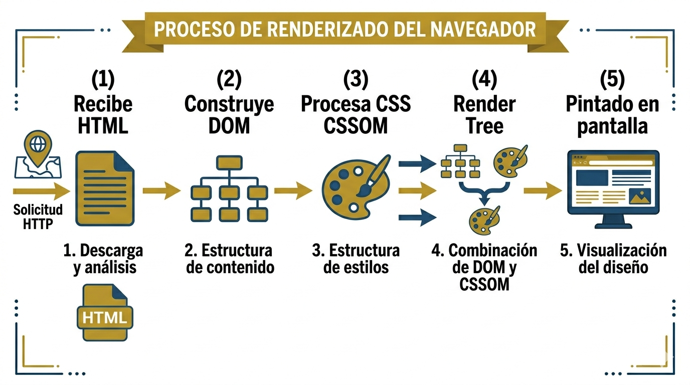

Paso 4: Respuesta HTTP y Renderizado HTML5
El navegador recibe la respuesta del servidor. Analiza el HTML, construye el DOM, aplica los estilos CSS y pinta la pagina en pantalla.

Etiquetas semanticas de HTML5
| Etiqueta | Proposito | Beneficio SEO/Accesibilidad |
|---|---|---|
| <header> | Encabezado de pagina o seccion | Define la zona superior |
| <nav> | Menu de navegacion principal | Lectores de pantalla lo identifican |
| <main> | Contenido principal unico | Mejora la indexacion |
| <section> | Seccion tematica del contenido | Organiza logicamente el documento |
| <article> | Contenido autonomo (blog, noticia) | Facilita scraping y RSS |
| <aside> | Contenido complementario lateral | Separa contenido secundario |
| <footer> | Pie de pagina o seccion | Agrupa datos de contacto/derechos |
| <figure> | Imagen con leyenda | Vincula imagen a su descripcion |
Muestra de codigo HTML5 semantico
<!DOCTYPE html>
<html lang="es">
<head>
<meta charset="UTF-8">
<title>Mi Pagina</title>
</head>
<body>
<header><h1>Mi Sitio Web</h1></header>
<nav><a href="index.html">Inicio</a></nav>
<main>
<section>
<h2>Bienvenido</h2>
<p>Contenido principal aqui.</p>
</section>
</main>
<footer><p>© 2026 Luis Romo</p></footer>
</body>
</html>